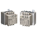
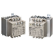

Building Automation
Industrial Automation
Power Automation & Safety


Bangladesh Distributor
Solid-state Relays
No-contact relays that semiconductor is utilized, which enables high-speed and high-frequency operation. OMRON provides Solid-state Relay for enormous range of applications.
|
|
Features |
| Principles |
|
| Engineering Data | Further Information |
SSR Glossary
Circuit functions
Photocoupler/Phototriac coupler
Transfers the input signal while insulating inputs and outputs.
Zero cross circuit
A circuit which starts operation with the AC load voltage at close to zero-phase.
A circuit for controlling the triac trigger signal, which turns the load current ON and OFF.
A circuit consisting of a resistor R and capacitor C that prevents faulty ignition from occurring in the SSR triac by suppressing a sudden rise in the voltage applied to the triac.
Input
The voltage that serves as the standard value of an input signal voltage.
Operating voltage
The permissible voltage range within which the voltage of an input signal voltage may fluctuate.
Input impedance
The impedance of the input circuit and the resistance of current-limiting resistors used. Impedance varies with the input signal voltage for the constant current input method.
Must operate voltage
Minimum input voltage when the output status changes from OFF to ON.
Must release voltage
Maximum input voltage when the output status changes from ON to OFF.
The current value when the rated voltage is applied.
Output
The effective supply voltage at which the SSR can be continuously energized with the output terminals connected to a load and power supply in series.
The effective value of the maximum current that can continuously flow into the output terminals under specified cooling conditions (such as the size, materials,thickness of the heat sink, and ambient temperature radiating conditions).
The effective value of the current that can flow into the output terminals when a specified load voltage is applied to the SSR with the output turned OFF.
Output ON voltage drop
The effective value of the AC voltage that appears across the output terminals when the maximum load current flows through the SSR under specified cooling conditions (such as the size, materials,thickness of heat sink, and ambient temperature radiation conditions).
The minimum load current at which the SSR can operate normally.
Characteristics
Operate time
A time lag between the moment a specified signal voltage is imposed to the input terminals and the output is turned ON.
A time lag between the moment the imposed signal input is turned OFF and the output is turned OFF.
Insulation resistance
The resistance between the input and output terminals or I/O terminals and metal housing (heat sink) when DC voltage is imposed.
Dielectric strength
The effective AC voltage that the SSR can withstand when it is applied between the input terminals and output terminals or I/O terminals and metal housing (heat sink) for more than 1 minute.
The ranges of temperature and humidity in which the SSR can operate normally under specified cooling, input/output voltage, and current conditions.
The temperature range in which the SSR can be stored without voltage imposition.
Others
Withstand surge current
The maximum non-repeat current that can flow to the SSR. Expressed using the peak value at the commercial frequency in one cycle.
Note: This value was conventionally expressed as the "withstand inrush current", but has been changed to "withstand surge current" because the former term was easily mistaken for inrush current of loads.
Counter-electromotive force
Extremely steep voltage rise which occurs when the load is turned ON or OFF.
The resistance connected in parallel to the load in order to increase apparently small load currents,so that the ON/OFF of minute currents functions normally.
Installing, Maintaining, and Inspecting SSRs
Fail-safe Concept
1. Error Mode
The SSR is an optimum relay for high-frequency switching and highspeed switching, but misuse or mishandling of the SSR may damage the elements and cause other problems. The SSR consists of semiconductor elements, and will break down if these elements are damaged by surge voltage or overcurrent. Most faults associated with the elements are short-circuit malfunctions, whereby the load cannot be turned OFF.
Therefore, to provide a fail-safe feature for a control circuit using an SSR, design a circuit in which a contactor or circuit breaker on the load power supply side will turn OFF the load when the SSR causes an error. Do not design a circuit that only turns OFF the load power supply with the SSR. For example, if the SSR causes a half-wave error in a circuit in which an AC motor is connected as a load, DC energizing may cause overcurrent to flow through the motor, thus burning the motor. To prevent this from occurring, design a circuit in which a circuit breaker stops overcurrent to the motor.
| Location | Cause | Result |
| Input area | Overvoltage | Input element damage |
| Output area | Overvoltage | Output element damage |
| Overcurrent | ||
| Whole Unit | Ambient temperature exceeding maximum | Output element damage |
| Poor heat radiation |
2. Overcurrent Protection
A short-circuit current or an overcurrent flowing through the load of the SSR will damage the output element of the SSR. Connect a quick-break fuse in series with the load as an overcurrent protection measure.
Design a circuit so that the protection coordination conditions for the quick-break fuse satisfy the relationship between the SSR surge resistance (IS), quick-break fuse current-limiting feature (IF), and the load inrush current (IL), shown in the following chart.
Note: Provide an appropriate non-fuse breaker to each machine for the overcurrent protection of the machine.
3. Operation Indicator
The operation indicator turns ON when current flows through the input circuit. It does not indicate that the output element is ON.
Application Circuit Examples
1. Connection to Sensor
The SSR connects directly to the Proximity Sensor and Photoelectric Sensor.
2. Switching Control of Incandescent Lamp
3.Temperature Control of Electric Furnace
4. Forward and Reverse Operation of Single-phase Motor
Note:
1. The voltage between the load terminals of either SSR 1 or SSR 2 turned OFF is approximately twice as high as the supply voltage due to LC coupling. Be sure to apply an SSR model with a rated output voltage of at least twice the supply voltage.
For example, if forward/reverse operation is to be performed on a single-phase inductive motor with a supply voltage of 100 VAC, the SSR must have an output voltage of 200 VAC or higher.
2. Make sure that there is a time lag of 30 ms or more to switch over SW1 and SW2.
3. Resistor to limit advanced phase capacitor discharge current. To select a suitable resistor, consult with the manufacturer of the motor.
5. ON/OFF Control of Three-phase Inductive Motor
6. Forward and Reverse Operation of Three-phase Motor
Make sure that signals input into the SSR Units are proper if the SSR Units are applied to the forward and reverse operation of a threephase motor. If SW1 and SW2 as shown in the following circuit diagram are switched over simultaneously, a phase short-circuit will result on the load side, which may damage the output elements of the SSR Units. This is because the SSR has a triac as an output element that is turned ON until the load current becomes zero regardless of the absence of input signals into the SSR.
Therefore, make sure that there is a time lag of 30 ms or more to switch over SW1 and SW2.
The SSR may be damaged due to phase short-circuiting if the SSR malfunctions with noise in the input circuit of the SSR. To protect the SSR from phase short-circuiting damage, the protective resistance R may be inserted into the circuit.
The value of the protective resistance R must be determined according to the withstand surge current of the SSR. For example,the G3NA-220B withstands an inrush current of 220 A. The value of the protective resistance R is obtained from the following.
Considering the circuit current and ON time, insert the protective resistance into the side that reduces the current consumption.
Obtain the consumption power of the resistance from the following.
7. Inrush Currents to Transformer Loads
The inrush current from a transformer load will reach its peak when the secondary side of the transformer is open, when no mutual reactance will work. It will take half a cycle of the power supply frequency for the inrush current to reach its peak, the measurement of which without an oscilloscope will be difficult.
The inrush current can be, however, estimated by measuring the DC resistance of primary side of the transformer.
Due to the self-reactance of the transformer in actual operation, the actual inrush current will be less than the calculated value.
If the transformer has a DC resistance of 3 . and the load power supply voltage is 220 V, the following inrush current will flow.
The withstand surge current of OMRON's SSRs is specified on condition that the SSRs are in non-repetitive operation (one or two operations). If your application requires repetitive SSR switching, use an SSR with an inrush current resistance twice as high as the rated value (I peak).
In the case above, use the G3[][]-220[] with an withstand surge current of 207.4 A or more.
The DC resistance of primary side of the transformer can be calculated back from the withstand surge current by using the following formula.
For applicable SSRs based on the DC resistance of the primary side of the transformer, refer to the tables below.
These tables list SSRs with corresponding inrush current conditions.When using SSRs to actual applications, however, check that the steady-state currents of the transformers satisfy the rated current requirement of each SSR.
SSR Rated Current
The underlined two digits refer to the rated current (i.e., 40 A in the case of the above model).
Three digits may be used for the G3NH only.
G3NH:
G3NH-[]075B = 75 A
G3NH-[]150B = 150 A
Condition 1:
The ambient temperature of the SSR (the temperature inside the panel) is within the rated value specified.
Condition 2:
The right heat sink is provided to the SSR.
Load Power Supply Voltage: 100 V
| Trans former DC resistance (Ω) | Inrush current (A) | SSR inrush current resistance (A) | Applicable SSR | |||
| G3P[] | G3NA | G3NE | G3NH | |||
| 4.8 min. | 30 | 60 | --- | -205[] | -205[] | --- |
| 1.9 to 4.7 | 75 | 150 | -210[] -215[] | -210[] | -210[] | --- |
| 1.3 to 1.8 | 110 | 220 | -220[] -225[] | -220[] | -220[] | --- |
| 0.65 to 1.2 | 220 | 440 | -235[] -240[] -245[] -260[] | -240[] | --- | --- |
| 0.36 to 0.64 | 400 | 800 | --- | --- | --- | -2075[] |
| 0.16 to 0.35 | 900 | 1,800 | --- | --- | --- | -2150[] |
Load Power Supply Voltage: 110 V
| Trans former DC resistance (Ω) | Inrush current (A) | SSR inrush current resistance (A) | Applicable SSR | |||
| G3P[] | G3NA | G3NE | G3NH | |||
| 5.2 min. | 30 | 60 | --- | -205[] | -205[] | --- |
| 2.1 to 5.1 | 75 | 150 | -210[] -215[] | -210[] | -210[] | --- |
| 1.5 to 2.0 | 110 | 220 | -220[] -225[] | -220[] | -220[] | --- |
| 0.71 to 1.4 | 220 | 440 | -235[] -240[] -245[] -260[] | -240[] | --- | --- |
| 0.39 to 0.70 | 400 | 800 | --- | --- | --- | -2075[] |
| 0.18 to 0.38 | 900 | 1,800 | --- | --- | --- | -2150[] |
Load Power Supply Voltage: 120 V
| Trans former DC resistance (Ω) | Inrush current (A) | SSR inrush current resistance (A) | Applicable SSR | |||
| G3P[] | G3NA | G3NE | G3NH | |||
| 5.7 min. | 30 | 60 | --- | -205[] | -205[] | --- |
| 2.3 to 5.6 | 75 | 150 | -210[] -215[] | -210[] | -210[] | --- |
| 1.6 to 2.2 | 110 | 220 | -220[] -225[] | -220[] | -220[] | --- |
| 0.78 to 1.5 | 220 | 440 | -235[] -240[] -245[] -260[] | -240[] | --- | --- |
| 0.43 to 0.77 | 400 | 800 | --- | --- | --- | -2075[] |
| 0.19 to 0.42 | 900 | 1,800 | --- | --- | --- | -2150[] |
Load Power Supply Voltage: 200 V
| Trans former DC resistance (Ω) | Inrush current (A) | SSR inrush current resistance (A) | Applicable SSR | |||
| G3P[] | G3NA | G3NE | G3NH | |||
| 9.5 min. | 30 | 60 | --- | -205[] | -205[] | --- |
| 3.8 to 9.4 | 75 | 150 | -210[] -215[] | -210[] | -210[] | --- |
| 2.6 to 3.7 | 110 | 220 | -220[] -225[] | -220[] | -220[] | --- |
| 1.3 to 2.5 | 20 | 440 | -235[] -240[] -245[] -260[] | -240[] | --- | --- |
| 0.71 to 1.2 | 400 | 800 | --- | --- | --- | -2075[] |
| 0.32 to 0.70 | 900 | 1,800 | --- | --- | --- | -2150[] |
Load Power Supply Voltage: 220 V
| Trans former DC resistance (Ω) | Inrush current (A) | SSR inrush current resistance (A) | Applicable SSR | |||
| G3P[] | G3NA | G3NE | G3NH | |||
| 10.4 min. | 30 | 60 | --- | -205[] | -205[] | --- |
| 4.2 to 10.3 | 75 | 150 | -210[] -215[] | -210[] | -210[] | --- |
| 2.9 to 4.1 | 110 | 220 | -220[] -225[] | -220[] | -220[] | --- |
| 1.5 to 2.8 | 220 | 440 | -235[] -240[] -245[] -260[] | -240[] | --- | --- |
| 0.78 to 1.4 | 400 | 800 | --- | --- | --- | -2075[] |
| 0.35 to 0.77 | 900 | 1,800 | --- | --- | --- | -2150[] |
Load Power Supply Voltage: 240 V
| Trans former DC resistance (Ω) | Inrush current (A) | SSR inrush current resistance (A) | Applicable SSR | |||
| G3P[] | G3NA | G3NE | G3NH | |||
| 11.4 min. | 30 | 60 | --- | -205[] | -205[] | --- |
| 4.6 to 11.3 | 75 | 150 | -210[] -215[] | -210[] | -210[] | --- |
| 3.1 to 4.5 | 110 | 220 | -220[] -225[] | -220[] | -220[] | --- |
| 1.6 to 3.0 | 220 | 440 | -235[] -240[] -245[] -260[] | -240[] | --- | --- |
| 0.85 to 1.5 | 400 | 800 | --- | --- | --- | -2075[] |
| 0.38 to 0.84 | 900 | 1,800 | --- | --- | --- | -2150[] |
Load Power Supply Voltage: 400 V
| Trans former DC resistance (Ω) | Inrush current (A) | SSR inrush current resistance (A) | Applicable SSR | |||
| G3P[] | G3NA | G3NE | G3NH | |||
| 7.6 min. | 75 | 150 | --- | -410[] | --- | --- |
| 5.2 to 7.5 | 110 | 220 | -420[] -430[] | -420[] | --- | --- |
| 2.6 to 5.1 | 220 | 440 | -435[] -445[] | --- | --- | --- |
| 1.5 to 2.5 | 400 | 800 | --- | --- | --- | -4075[] |
| 0.63 to 1.4 | 900 | 1,800 | --- | --- | --- | -4150[] |
Load Power Supply Voltage: 440 V
| Trans former DC resistance (Ω) | Inrush current (A) | SSR inrush current resistance (A) | Applicable SSR | |||
| G3P[] | G3NA | G3NE | G3NH | |||
| 8.3 min. | 75 | 150 | --- | -410[] | --- | --- |
| 5.7 to 8.2 | 110 | 220 | -420[] -430[] | -420[] | --- | --- |
| 2.9 to 5.6 | 220 | 440 | -435[] -450[] | --- | --- | --- |
| 1.6 to 2.8 | 400 | 800 | --- | --- | --- | -4075[] |
| 0.70 to 1.5 | 900 | 1,800 | --- | --- | --- | -4150[] |
Load Power Supply Voltage: 480 V
| Trans former DC resistance (Ω) | Inrush current (A) | SSR inrush current resistance (A) | Applicable SSR | |||
| G3P[] | G3NA | G3NE | G3NH | |||
| 9.1 min. | 75 | 150 | --- | -410[] | --- | --- |
| 6.2 to 9.0 | 110 | 220 | -420[] -430[] | -420[] | --- | --- |
| 3.1 to 6.1 | 220 | 440 | -450[] | --- | --- | --- |
8.Transformer Tap Selection
SSRs can be used to switch between transformer taps. In this case,however, be aware of voltage induced on the OFF-side SSR. The induced voltage increases in proportion to the number of turns of the winding that is almost equivalent to the tap voltage.
See the following example. The power supply voltage is at 200 V, N1 is 100, N2 is 100, and SSR2 is ON. Then the difference in voltage between output terminals of SSR1 is at 400 V (i.e., twice as high as the power supply voltage).
Designing SSR Circuits
Heat Radiation Designing
1. SSR Heat Radiation
Triacs, thyristors, and power transistors are semiconductors that can be used for an SSR output circuit. These semiconductors have a residual voltage internally when the SSR is turned ON.This is called output-ON voltage drop. If the SSR has a load current, the Joule heating of the SSR will result consequently. The heating value P (W) is obtained from the following formula.
Heating value P (W) = Output-ON voltage drop (V) × Carry current (A)
For example, if a load current of 8 A flows from the G3NA-210B,the following heating value will be obtained.
If the SSR employs power MOS FET for SSR output, the heating value is calculated from the ON-state resistance of the power MOS FET instead.
In that case, the heating value P (W) will be obtained from the following formula.
If the G3RZ with a load current of 0.5 A is used, the following heating value will be obtained.
The ON-state resistance of a power MOS FET rises with an increase in the junction temperature of a power MOS FET.Therefore, the ON-state resistance varies while the SSR is in operation. If the load current is 80% of the load current or higher,as a simple method, the ON-state resistance will be multiplied by 1.5.
The SSR in usual operation switches a current of approximately 5 A with no heat sink used. If the SSR must switch a higher current,a heat sink will be required. The higher the load current is, the larger the heat sink size will be. If the switching current is 10 A or more, the size of the SSR with a heat sink will exceed a single mechanical relay. This is a disadvantage of SSRs for circuit downsizing purposes.
2.Heat Sink Selection
SSR models with no heat sinks incorporated (i.e., the G3NA,G3NE, and three-phase G3PB) need external heat sinks. When using any of these SSRs, select an ideal combination of the SSR and heat sink according to the load current.
The following combinations are ideal, for example.
G3NA-220B: Y92B-N100
G3NE-210T(L): Y92B-N50
G3PE-235B-3H: Y92B-P200
A standard heat sink equivalent to an OMRON-made one can be used, on condition that the thermal resistance of the heat sink is lower than that of the OMRON-made one.
For example, the Y92B-N100 has a thermal resistance of 1.63°C/W.
If the thermal resistance of the standard heat sink is lower than this value (i.e., 1.5°C/W, for example), the standard heat sink can be used for the G3NA-220B.
Thermal resistance indicates a temperature rise per unit (W). The smaller the value is, the higher the efficiency of heat radiation will be.
3.Calculating Heat Sink Area
An SSR with an external heat sink can be directly mounted to control panels under the following conditions.
If the heat sink is made of steel used for standard panels, do not apply a current as high as or higher than 10 A, because the heat conductivity of steel is less than that of aluminum. Heat conductivity (in units of W·m·°C) varies with the material as described below.
Steel: 20 to 50
Aluminum: 150 to 220
The use of an aluminum-made heat sink is recommended if the SSR is directly mounted to control panels. Refer to the data sheet of the SSR for the required heat sink area.
Apply heat-radiation silicon grease (e.g., the YG6260 from Toshiba or the G746 from Shin-Etsu) or a heat conductive sheet between the SSR and heat sink. There will be a space between the SSR and heat sink attached to the SSR. Therefore, the generated heat of the SSR cannot be radiated properly without the grease. As a result, the SSR may be overheated and damaged or deteriorated.
The heat dissipation capacity of a heat conduction sheet is generally inferior to that of silicon grease. If a heat conduction sheet is used, reduce the load current by approximately 10% from the Load Current vs. Ambient Temperature Characteristics graph.
4.Control Panel Heat Radiation Designing
Control equipment using semiconductors will generate heat,regardless of whether SSRs are used or not. The failure rate of semiconductors greatly increases when the ambient temperature rises. It is said that the failure rate of semiconductors will be doubled when the temperature rises 10°C (Arrhenius model).
Therefore, it is absolutely necessary to suppress the interior temperature rise of the control panel in order to ensure the long,reliable operation of the control equipment.
Heat-radiating devices in a wide variety exists in the control panel.As a matter of course, it is necessary to consider the total temperature rise as well as local temperature rise of the control panel. The following description provides information on the total heat radiation designing of the control panel.
As shown below, the heat conductivity Q will be obtained from the following formula, provided that th and tc are the temperature of the hot fluid and that of the cool fluid separated by the fixed wall.
Where, k is an overall heat transfer coefficient (W/m2°C). This formula is called a formula of overall heat transfer.
When this formula is applicable to the heat conductivity of the control panel under the following conditions, the heat conductivity Q will be obtained as shown below.
The required cooling capacity is obtained from the following formula under the following conditions.
The overall heat transfer coefficient k of a standard fixed wall in a place with natural air ventilation will be 4 to 12 (W/m2°C). In the case of a standard control panel with no cooling fan, it is an empirically known fact that a coefficient of 4 to 6 (W/m2°C) is practically applicable. Based on this, the required cooling capacity of the control panel is obtained as shown below.
Example
・ Desired internal temperature of control panel: 40°C
・ Ambient temperature: 30°C
・ Control panel size 2.5 × 2 × 0.5 m (W × H × D) Self-sustained control panel (with the bottom area excluded from the calculation of the surface area)
・ SSR: 20 G3PA-240B Units in continuous operation at 30 A.
・ Total heat radiation of all control devices except SSRs: 500 W
Total heat radiation of control panel: P1
Heat radiation from control panel: Q2
Therefore, the required cooling capacity P2 will be obtained from the following formula.
Therefore, heat radiation from the surface of the control panel is insufficient. More than a heat quantity of 797 W needs to be radiated outside the control panel.
Usually, a ventilation fan with a required capacity will be installed. If the fan is not sufficient, an air conditioner for the control panel will be installed. The air conditioner is ideal for the long-time operation of the control panel because it will effectively dehumidify the interior of the control panel and eliminate dust gathering in the control panel.
Axial-flow fan: OMRON's R87B, R87F, and R87T Series
Air conditioner for control panel: Apiste's ENC Series
5.Types of Cooling Device
Axial-flow Fans (for Ventilation)
These products are used for normal types of cooling and ventilation.
OMRON's Axial-flow Fan lineup includes the R87F and R87T Series.
Heat Exchangers
Heat exchangers dissipate the heat inside control panels along heat pipes. Using a heat exchanger enables the inside and outside of the control panel to be mutually isolated, allowing use in locations subject to dust or oil mist.
Note: OMRON does not produce heat exchangers.
Air Conditioners for Control Panels
Not only do these products offer the highest cooling capacity, they also offer resistance to dust and humidity by mutually isolating the inside and outside of the control panel.
Note: OMRON does not produce air conditioners for control panels.
Mounting and Installation
Panel Mounting
If SSRs are mounted inside an enclosed panel, the radiated heat of the SSR will stay inside, thus not only dropping the carry-current capacity of the SSRs but also adversely affecting other electronic device mounted inside. Open some ventilation holes on the upper and lower sides of the control panel before use.
The following illustrations provide a recommended mounting example of G3PA Units. They provide only a rough guide and so be sure to confirm operating conditions using the procedure detailed in 4. Confirmation after Installation.
1. SSR Mounting Pitch
Panel Mounting
2. Relationship between SSRs and Ducts
Duct Depth
3.Ventilation
If the air inlet or air outlet has a filter, clean the filter regularly to prevent it from clogging and ensure an efficient flow of air.
Do not locate any objects around the air inlet or air outlet, or otherwise the objects may obstruct the proper ventilation of the control panel.
A heat exchanger, if used, should be located in front of the G3PA Units to ensure the efficiency of the heat exchanger.
4. Confirmation after Installation
The above conditions are typical examples confirmed by OMRON. The application environment may affect conditions and ultimately the ambient temperature must be measured under power application to confirm that the load current-ambient temperature ratings are satisfied for each model.
Ambient Temperature Measurement Conditions
1. Measure the ambient temperature under the power application conditions that will produce the highest temperature in the control panel and after the ambient temperature has become saturated.
2. Refer to Figure 1 for the measurement position. If there is a duct or other equipment within the measurement distance of 100 mm, refer to Figure 2. If the side temperature cannot be measured, refer to Figure 3.
Figure 1: Basic Measurement Position for Ambient Temperature
Figure 2: Measurement Position when a Duct or Other Device is Present
Figure 3: Measurement Position when Side Temperature Cannot be Measured
3. If more than one row of SSRs are mounted in the control panel, measure the ambient temperature of each row, and use the position with the highest temperature.Consult your OMRON dealer, however, if the measurement conditions are different from those given above.
Definition of Ambient Temperature
SSRs basically dissipate heat by natural convection. Therefore,the ambient temperature is the temperature of the air that dissipates the heat of the SSR.
Recommended Products
 G3J-T
G3J-T
Soft-start/stop Function Starts and Stops Three-phase Motors Smoothly and Economically
G3NA
Wide Lineup of General-purpose Solid State Relays with Applicable Loads of 5 to 90 A
G3PE (Three-phase)
Compact, Slim-profile SSRs with Heat Sinks. Solid State Contactors for Three-phase Heaters Reduced Installation Work with DIN Track Mounting.